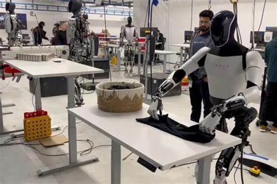

Bem-vindo ao nosso site sobre o Técnico em Desenvolvimento de Sistemas! Aqui você vai descobrir mais sobre a profissão, curiosidades, áreas de atuação e as possibilidades dentro do mercado de trabalho.
Áreas de Atuação
Desenvolvimento Web
O desenvolvimento web envolve a criação de sites e sistemas online. No curso, você aprende a trabalhar com:
- HTML, CSS e JavaScript: As bases do desenvolvimento de sites.
- Frameworks modernos: React, Angular e Vue.js são algumas das tecnologias mais utilizadas no mercado.
O desenvolvimento web oferece a possibilidade de criar sistemas interativos e otimizados para grandes volumes de usuários.
Criação de Jogos
Para os apaixonados por games, o curso permite explorar o desenvolvimento de jogos digitais:
- Unity: Uma das plataformas mais populares para criar jogos 2D e 3D.
- Unreal Engine: Usada para jogos mais complexos e realistas.
Os técnicos podem criar desde jogos simples para dispositivos móveis até jogos para grandes consoles.
Robótica e Automação
A área de robótica é fascinante, permitindo a criação de sistemas que automatizam processos em diversos setores:
- Integração de software e hardware: O técnico aprende a programar e controlar robôs para diversas aplicações, como indústrias e até a medicina.
- Automação de fábricas: A robótica permite a criação de linhas de produção automatizadas, aumentando a eficiência e a precisão das operações.
Fábricas
utilizam a robótica para automação de produtos.
Professores
inspiram alunos a estudar robótica.
Elon Musk
mostra robô humanoide da Tesla dobrando camiseta e assusta internautas.
